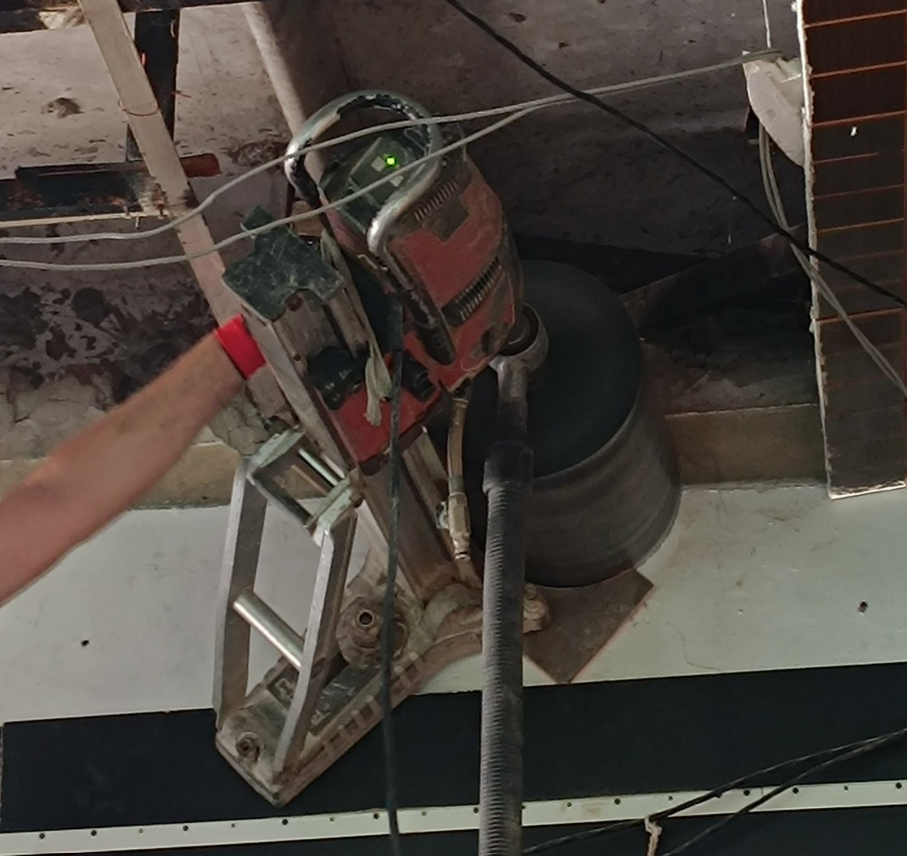
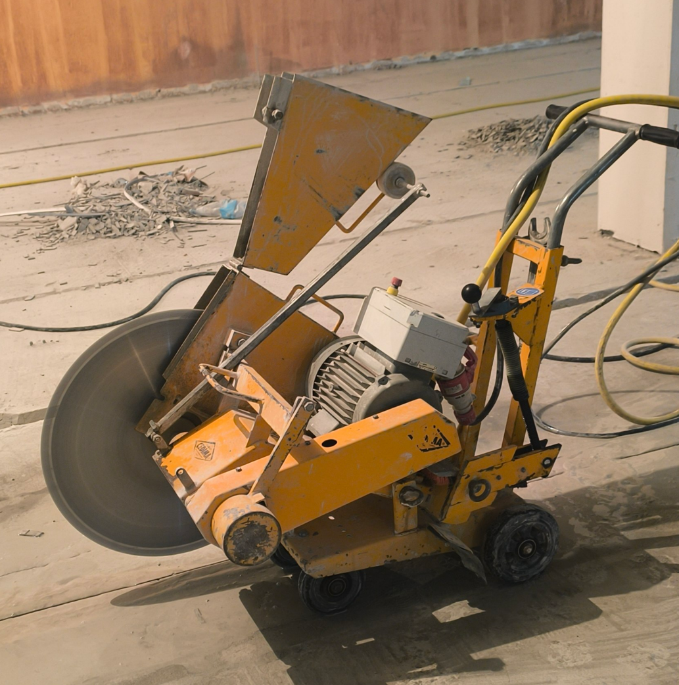
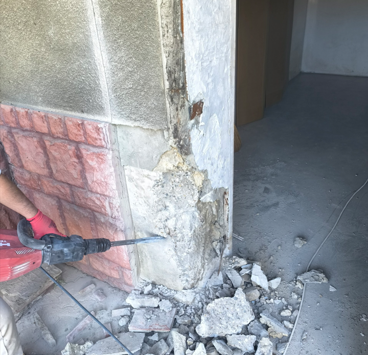

Servicii principale
Ce oferim pentru proiectul tău
Găurirea diamantată a betonului
Perforăm cu precizie milimetrică structuri din beton armat, cărămidă sau piatră, fără vibrații periculoase. Folosim carotiere profesionale pentru goluri perfecte.
Tăierea betonului și a materialelor dure
Efectuăm tăieri și decupaje controlate în pereți sau pardoseli, indiferent de grosime sau duritate. Linii perfecte, emisii reduse de praf și zgomot minim.
Demolarea pereților
Realizăm demolări parțiale sau totale pentru pereți din beton, cărămidă ori BCA, intervenind rapid și controlat pentru a proteja structura existentă.
Încărcarea și evacuarea deșeurilor
Asigurăm colectare, încărcare și transport responsabil al deșeurilor rezultate. Lăsăm șantierul curat și gata pentru următoarea etapă.
Despre noi
Profesionalism și soluții precise în fiecare lucrare
Suntem o echipă dedicată excelenței în găurire diamantată, tăiere și demolare controlată a betonului. Intervenim cu precizie atât în proiecte rezidențiale, cât și industriale, asumându-ne fiecare provocare cu seriozitate și responsabilitate.
Folosim utilaje de ultimă generație și tehnici diamantate care ne permit să lucrăm rapid, curat și sigur. Satisfacția clientului este prioritatea noastră, iar serviciile noastre includ și strângerea, încărcarea și evacuarea molozului.
Echipamente profesionale de nivel înalt
Rapiditate și eficiență maximă
Experiență și versatilitate pe orice tip de lucrare
Serviciu complet: execuție, curățenie și evacuare moloz
Portofoliu
Lucrări finalizate cu succes
Experiența noastră include proiecte diverse, de la intervenții în locuințe private la lucrări structurale complexe în spații industriale.

Găurire diamantată de precizie
Realizăm goluri exacte pentru instalații, hote și sisteme de ventilație fără a afecta structura.

Tăiere beton și decupaje controlate
Tăiem beton și materiale dure cu echipamente diamantate pentru rezultate curate și sigure.

Demolări și evacuare deșeurilor
Oferim demontare de pereți, evacuare rapidă a deșeurilor și curățenie pe șantier la final de lucrare.
„98% dintre clienții noștri ne recomandă mai departe! Majoritatea clienților ne oferă recenzii excelente pentru calitatea execuției, punctualitatea și profesionalismul echipei.”
Contact
Hai să începem proiectul tău
Date de contact
Telefon: 079 197 843
Email: finartdiamant01@gmail.com
TikTok: @finartdiamant
Program: Luni-Vineri 08:00-17:00
Adresă: Intervenții la fața locului, solicită ofertă pentru locație